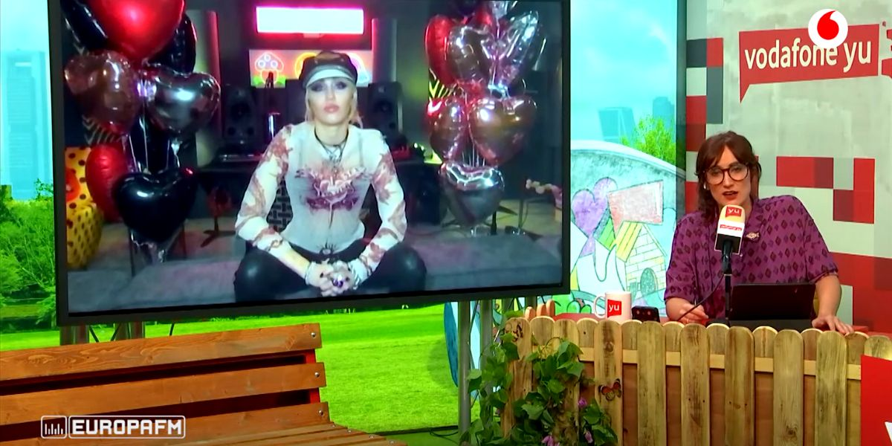

Las redes sociales y en especial Twitter ya eran un hervidero de rumores antes de que el vídeo se lanzara
Los problemas con el servicio empezaron a notarse hacia las 10:00 horas
La cantante ha presentado su último trabajo discográfico en exclusiva en 'yu No te pierdas nada', donde además de explicar lo fantástico que es trabajar con Dua Lipay de adelantar cuál será su próxima cover, nos contó qué pretendía conseguir con el mensaje que le escribió a Pedro Sánchez este verano, y confiesa lo mucho que echa de menos actuar en los 'sitios que ama', como España.
©Gisela González del Alba / Información de la redactora